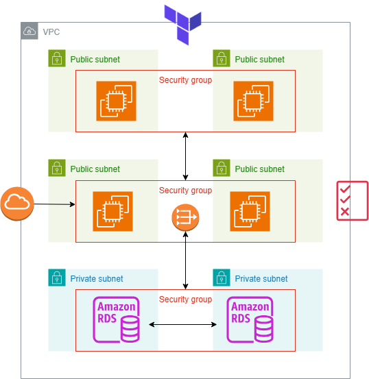

This project showcases the end-to-end automation of a multi-tier web application architecture on AWS using Terraform as Infrastructure as Code (IaC). The setup provisions a custom VPC with public and private subnets distributed across multiple Availability Zones for high availability and fault tolerance. The frontend and backend tiers are deployed on separate EC2 instances, each residing in isolated subnets to enhance security and performance.
A managed RDS (MySQL/PostgreSQL) instance is used for the database layer, configured with automated backups, multi-AZ failover, and restricted network access through security groups. The application load balancer (ALB) distributes incoming traffic across frontend instances, ensuring scalability and reliability. All resources are parameterized, allowing flexible environment creation (dev/stage/prod) using reusable Terraform modules.
